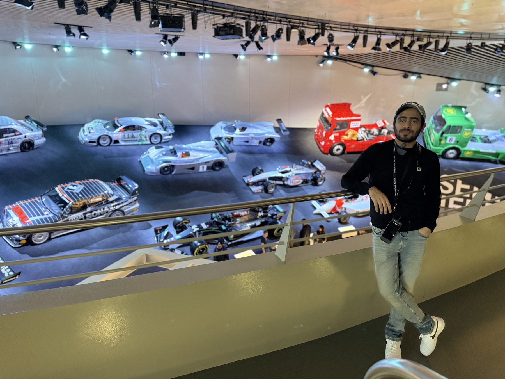

Hi, I'm Zoeb Ali Khan, Data Scientist, ML Engineer, and Problem Solver.
Yes, Bielefeld does exist..!! And I've been living and studying here since 2023, building things with data that actually matter.
Machine Learning
From classical ML to deep learning, NLP, and production model deployment.
Data Engineering
ETL pipelines, REST APIs, cloud infrastructure, and MLOps at scale.
Data Analytics
Statistical modeling, interactive dashboards, and data driven decision making.
MLOps & Deployment
Containerized model serving, CI/CD, and cloud deployment that keeps pipelines running in production.
Software Engineering
Clean, tested code and REST APIs that turn notebooks into real, maintainable applications.

Zoeb's Journey
Growing up in Mumbai, I was surrounded by the energy of one of the world's most data rich cities, millions of people, transactions, patterns. That curiosity about what the data meant led me to study AI and Data Science at Rizvi Engineering College, University of Mumbai.
In 2024, I packed my bags and moved to Bielefeld, Germany, yes, the city that allegedly doesn't exist, to pursue my M.Sc. in Data Science at Universität Bielefeld. Along the way I interned at YBI Foundation, building real ETL pipelines on GCP BigQuery and automating SQL workflows.
Today I build things that bridge raw data and real decisions, from deployed ML APIs to RAG powered systems. I'm actively looking for Werkstudent and internship roles across Germany where I can contribute and keep growing.